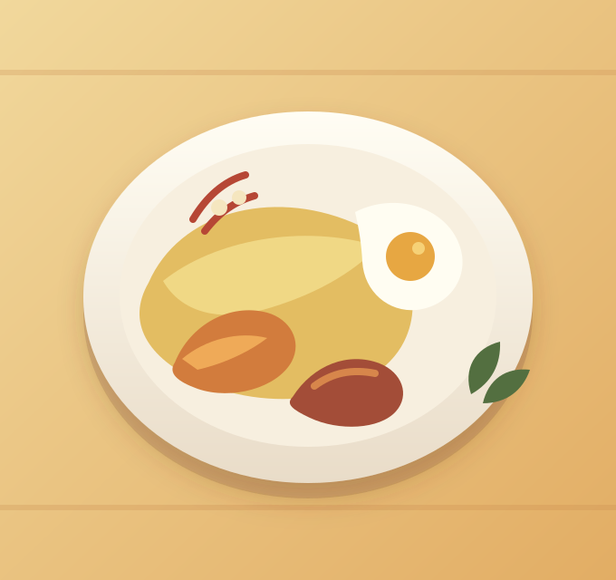
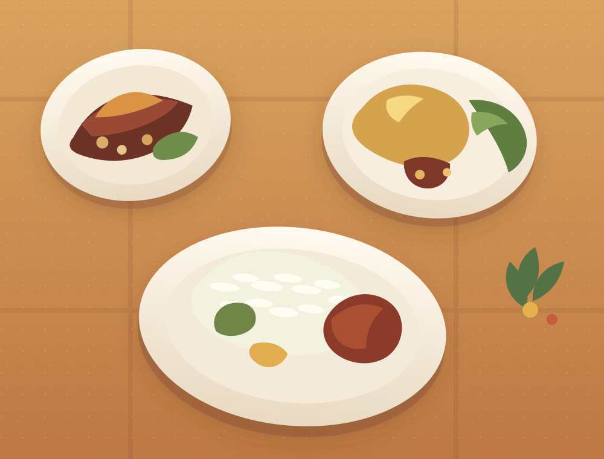

01Cocina criolla · sabor de casa
El sabor que
nos reúne.
Recetas dominicanas, ingredientes llenos de color y ese gustito de sentarse a la mesa en familia.
Descubre el menúHecho para disfrutar sin prisa.

Con sazón de aquí
Tradición servida
con cariño.
En Sazon Dominicano celebramos esos platos que nos conectan con nuestras raíces: recetas criollas, sabores generosos y el placer de compartir. Cada bocado invita a sentirse en casa.
Conoce nuestros platosLa mesa está servida
Que no falte
un plato más.
Reúne a los tuyos y disfruta la alegría sencilla de una buena comida dominicana.
Volver al menú